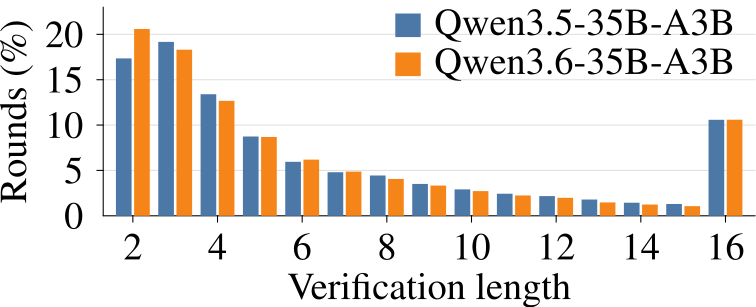
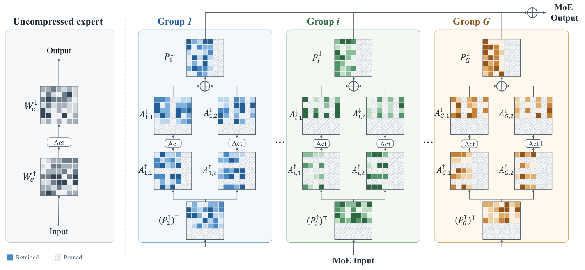

目录 · 9 节
1它到底在解决什么问题？2先看全貌：先选长度，在第一个路由器后面再改一次3长度怎么选：多收的 token 和多花的时间放在一起比4路由修正：看到真实的专家分配，再决定多验不多验5GDN 的状态：一次算完，事后再按收下的长度重建6效果怎么样？7我认为它的局限8一个推理团队可以怎么试9结论给混合了 Gated DeltaNet（GDN，带循环状态的线性注意力层）和 MoE 的模型做投机解码，每轮验证几个草稿 token 不能照搬稠密模型的设定。在一个 Qwen 混合模型上，一轮验证的 token 数从 4 加到 16，验证耗时涨了 71%。HybridSpec 每一轮给每个可选长度打分：按草稿置信度估出的预计产出 token 数，减去这段验证耗时按平均速度本可产出的 token 数。目标模型跑到第一个 MoE 路由器时，再看多验一个 token 会多用几个新专家，把这部分耗时算进得分，划算才多验。在三个这类模型上，同用 DFlash 出草稿，速度是每轮验满的原版 DFlash 的 1.3 倍左右。给混合架构模型做投机解码的团队值得读，因为稠密模型上调好的验证长度搬过来会白白多花不少时间。
它到底在解决什么问题？
DFlash 是一种并行出草稿的方法，一次前向就能给出 15 个草稿 token。出草稿约 1.8 ms，只占目标模型验证时间的几分之一。于是每一轮的大头变成了目标模型的验证。论文把目标模型这一轮要处理的 token 数叫验证长度：最新的一个已确认 token，加上要核对的草稿。原版 DFlash 每轮都把 15 个草稿全部验证，验证长度是 16。
下面用一个小例子（示意）看浪费在哪：
| 这一轮（示意） | 验证长度 | 收下的草稿 | 错的那个之后还被核对的草稿 |
|---|---|---|---|
| 草稿第 4 个就猜错，全部验证 | 16 | 3 个 | 第 5 到第 15 个，共 11 个 |
| 同样的草稿，只验前 5 个 | 6 | 3 个 | 只有第 5 个 |
系统事先并不知道第 4 个会错。第二行只是说明：长度选得短一些，白做的就少。
在稠密模型上，这点浪费不太要紧。batch 为 1 时，稠密模型的时间主要花在把权重从显存读出来，多算几个 token 几乎不加时间。作者在 Qwen3-4B 上量过，验证长度从 4 加到 16，验证只慢了 4% 到 6%。
混合模型不一样。Qwen3.5、Qwen3.6 这类模型大部分层是 GDN（Qwen3.6-35B-A3B 的 40 层里有 30 层），中间穿插少量普通注意力层，每层后面接一个 MoE 块。在 Qwen3.6-35B-A3B 上，同样从 4 加到 16，验证慢了 71%，几乎全部涨在 GDN 和 MoE 两类层上。原因有两个：
- GDN 的状态要能回退。GDN 不存不断变长的 KV cache，而是维护一个固定大小的状态矩阵，每读一个 token 就更新一次。验证时不知道会收下几个草稿，SGLang 默认的做法是每更新一次就完整存一份状态，以便退回到被收下的那个位置。验得越长，存的份数越多。
- MoE 的开销看用到多少个专家。这些模型每个 token 只走 256 个专家里的 8 个。多验一个 token，如果它用的专家前面的 token 已经用过，几乎不加时间。如果它用到了新专家，就要多读一份专家权重。哪个 token 用哪些专家，要等目标模型真的跑起来才知道。
所以在混合模型上，验证长度不能再一律定成 16。只用一条事先测好的平均耗时曲线也不够，因为多验的那个 token 到底用到几个新专家，要跑起来才知道。
先看全貌：先选长度，在第一个路由器后面再改一次

HybridSpec 一轮的做法可以分成四步：
- 草稿侧先选长度。草稿模型出完 15 个草稿后，根据每个草稿的把握，估计前 1 个、前 2 个……前 15 个草稿全部被收下的概率。再结合事先量好的“验证长度和目标模型耗时”的关系，选一个最划算的长度，记作 。这些概率只是预测，草稿最终收不收，要等目标模型跑完才知道。
- 目标模型先跑一小段。目标模型拿前 个 token 再多带 1 个，跑完第 0 层的 GDN 和 MoE 路由器后停下。如果已经选满 16 个，或者剩下的输出额度不够，就不多带，后面也不做修正。这时每个 token 被分到了哪些专家已经知道，但专家本身还没算。论文把这个停顿点叫路由边界（router boundary）。
- 路由修正。数一数多带的那个 token 在第 0 层新用了几个专家，据此重估它的耗时，再决定留下还是扔掉。最终验证长度是 或 。
- 只对选中的 token 跑完。从第 0 层的专家开始，接着跑到最后一层，核对草稿，再把收下的 token 写进各个缓存。第 0 层已经算过的部分不重算。
这里的关键分工是：草稿侧凭草稿的把握做主要决定，路由边界凭真实的专家分配做一次小修正。长度一直留在 GPU 上，选长度和按长度启动计算都不需要 CPU 读回来。作者为第一段和后一段的每一种可能长度各预先录好一份 CUDA Graph，运行时由条件节点直接按 GPU 上的长度挑一份启动。下面拆开讲。
长度怎么选：多收的 token 和多花的时间放在一起比
为什么不按“接受概率高于某个阈值”来截断？因为目标是整段生成的总吞吐：所有轮次产出的 token 总数除以总耗时。这个总比值不等于每轮比值的平均，所以每一轮怎么选，取决于整体能跑到多快。作者用 Dinkelbach 定理把它拆成了每一轮各自打分：
是前 个草稿全部被收下的估计概率，前面的求和就是这一轮预计能产出几个 token。 是目标模型的耗时曲线：在几个固定长度上实测每轮耗时，再拟合成一条随长度变化的曲线。 是整段生成预计能达到的吞吐，也就是平均每毫秒产出几个 token，事先在校准数据上估好。打分的意思是：同样的时间按平均速度本来能产出 乘以这段时间个 token，多验的 token 预计收益得超过它才划算。选择器把 2 到 16 每个长度的得分都算一遍，取最高的。实测耗时曲线不一定平滑，所以不能在第一次不划算时就停。 Hoot 说

得分是预计产出的 token 数，减去这段耗时按平均速度本可产出的 token 数。示意：每多验一个，被收下的概率乘 0.8。耗时成本涨得慢时（虚线），验到 16 个分最高。耗时成本涨得快时（实线），6 个分最高，验满 16 个几乎白干。拖动滑块看每个长度的得分。
出处
示意例子，对应论文 §3 的长度打分公式（式 5）一个能心算的例子（示意）：假设 折算下来，每多验一个位置的时间值 0.3 个 token。前 4 个草稿的累计接受概率是 0.9、0.7、0.5、0.25。验到第 3 个草稿还划算，因为 0.5 大于 0.3；第 4 个只值 0.25，不划算。在这种每个位置代价相同的简单情形下，得分最高的就是验 3 个草稿，加上开头那个已确认的 token，验证长度是 4。
接受概率从哪来？草稿模型给每个草稿 token 一个 top-1 置信度和一个熵。校准阶段，作者在 280 条校准提示上学了两样东西：一个把置信度换成接受概率的映射，和一个小的 logistic 模型。logistic 模型的输入是换算后的置信度、位置、熵，以及这个位置的熵比前面几个位置涨了还是落了。推理时每一轮，把这一轮 15 个草稿的置信度和熵代进去，得到每个位置的条件概率：在前面的草稿都被收下的前提下，这一个也被收下的概率。把第 1 到第 个位置的条件概率连乘，就是前 个草稿全部被收下的概率 。这一步只用草稿模型自己的输出，在目标模型开跑之前完成。
路由修正：看到真实的专家分配，再决定多验不多验
草稿侧选长度时，目标模型还没跑，只能按校准时的平均专家开销来算。可多验的那个 token 实际会不会用到新专家，事先并不知道。
HybridSpec 的办法是让目标模型多带一个 token，先跑到第 0 层的路由器。路由器已经给出了这个 token 的专家分配，就能数出它在第 0 层新用到了几个专家。作者在附录里量过，后面各层的专家分配和第 0 层中等相关（相关系数约 0.5），所以第 0 层的新专家数能帮着估后面各层。具体做法是校准时先建一张表：在这个位置上，第 0 层新用了 0 个、1 个、2 个……专家的 token，平均在后面各层又新用了多少个专家。推理时数出第 0 层的新专家数，查表就得到它在所有 MoE 层上预计新用几个专家。
batch 为 1 时，每个专家只处理几个 token，MoE 的耗时主要看用到多少个不同的专家。作者实测，在两个 35B 模型上每多用一个不同的专家，耗时多约 4.18 微秒。重估的耗时这样算：从耗时曲线上多验一个 token 的耗时出发，扣掉第 0 层已经替它算过的那部分；查表得到的新专家数比这个位置的平均值多几个，就按每个 4.18 微秒加上，少几个就减去。
修正规则沿用上面的打分。多带这个 token，预计产出会多出 ，也就是前面的草稿连同它全部被收下的预估概率。这个数如果高于重估后它多花的时间（按同一个 折成 token），就留下，否则扔掉。
举个例子（示意）：草稿侧选了 6，多带的第 7 个 token 在第 0 层用的专家，前面 6 个都已经用过。它几乎不加专家开销，第 0 层也已经替它算过。只要这个概率够高（这里假设是），重估后就划算，最终验 7 个。如果它用到了好几个新专家，重估后的耗时变高，就扔掉，只验 6 个。修正最多只加一个 token，因为第 0 层每一轮都要替所有可能加进来的 token 先算一遍，多带一个就多一份固定开销。
GDN 的状态：一次算完，事后再按收下的长度重建
GDN 的问题是状态回退。默认做法逐个 token 更新状态，每更新一次就存一份完整的状态矩阵。HybridSpec 利用了一个事实：验证时这一轮所有 token 都已经知道。
GDN 每读一个 token，先把旧状态整体乘一个衰减系数，再写入一份改动 ：从状态里按这个 token 的 key 读出旧值，把它朝这个 token 的 value 挪一个比例 （这就是 delta 规则）。第 个 token 的改动取决于它之前的状态，也就取决于前面各 token 的改动和这一轮开头的状态 。把所有改动排成矩阵 ，这些依赖就是一个下三角方程组。等号右边：每个 token 的 value，减去按它的 key 从衰减后的 里读出的值，再乘 。左边系数矩阵对角线是 1，第 行第 列（）是 乘两个 token 之间的衰减，再乘两个 key 的内积。解一次就得到所有 token 的改动，第 个 token 的输出，是用它自己的 query 去读状态 。 由 和第 1 到第 个 token 的改动拼出来，用的就是下面重建状态的同一个式子，所以只用到它自己和之前的改动。这是训练时常用的分块并行算法。
解完后，kernel 不存每一步的状态，只给每个 token 留三样小东西：它的 key、它的改动、到它为止的累计衰减。核对结束、知道收下了 个 token 之后，收下位置的状态这样重建：
是这一轮开头的状态， 和 是第 个 token 的改动和 key， 是累计衰减的对数。直觉是：开头的状态乘上整段的衰减；每个收下的 token 的改动，乘上它之后那几个 token 带来的衰减，再加进来。
只留这三样、事后重建的思路，SpecLA、TreeWY 等前人工作已经用过。HybridSpec 新在把它写成为单请求验证优化的融合 kernel，并且一次启动就重建全部 GDN 层的状态。
在 Qwen3.6-35B-A3B 的 30 个 GDN 层上单独测，草稿全部被收下时，这些 kernel 在长度 4 到 16 上的速度是 SGLang 默认 kernel 的 1.54 到 4.04 倍。长度越长，省得越多，因为默认做法每多一个 token 就多存一份状态。它还省显存：batch 为 1 时，默认做法要预留 1.88 GB 来存每一步的状态，相当于注意力缓存池的 40%，HybridSpec 不需要这块。
效果怎么样？
作者在 A100 上用 SGLang 测了三个 GDN 加 MoE 的模型，都配官方的 DFlash 草稿模型，一次只跑一个请求，贪心解码。提示词来自 SPEED-Bench 的 7 类任务，280 条用来校准，另外 280 条用来测试。下表是 7 类的平均，加速比是相对目标模型自己逐个生成：
| 目标模型 | 原版 DFlash | EVICT（最强基线） | HybridSpec |
|---|---|---|---|
| Qwen3.5-35B-A3B | 1.45× | 1.59× | 1.88× |
| Qwen3.6-35B-A3B | 1.37× | 1.51× | 1.83× |
| Qwen3.5-122B-A10B | 1.32× | 1.65× | 1.75× |
所有方法用的是同一个 DFlash 草稿模型，原版 DFlash 指每轮把 15 个草稿全部验证。HybridSpec 在每个模型的每一类任务上都最快，速度是原版 DFlash 的 1.30 到 1.33 倍。
有意思的是，它每轮产出的 token 反而比原版 DFlash 少。在两个 35B 模型上，它平均每轮只验 6.4 和 6.2 个 token，原版固定验 16 个。每轮产出的 token 因此少了约 5%，但每轮耗时从约 23 ms 降到 16.3 到 16.5 ms，所以总的速度还是更快。
没验的那些草稿，绝大多数本来就会被拒。这是事后对比得出的：每轮没验的 9.6 到 9.8 个草稿里，原本能收下的不到 3%。这说明少验的那部分几乎没有损失。

哪一部分贡献最大？作者在 Qwen3.6-35B-A3B 上一次去掉一个部件：
| 去掉的部件 | 换成 | 平均验证长度 | 加速比 | HybridSpec 比它快 |
|---|---|---|---|---|
| 长度选择 | 校准出的固定长度 7 | 7 | 1.54× | 1.19× |
| 长度选择 | 固定长度 16 | 16 | 1.46× | 1.25× |
| 路由修正 | 只用草稿侧的选择 | 6.1 | 1.73× | 1.06× |
| GDN kernel | SGLang 默认 kernel | 6.2 | 1.74× | 1.05× |
这说明大头是逐轮选长度。注意去掉长度选择后，两段式验证和路由修正也一起没了；两个固定长度的版本都用了新的 GDN kernel。和固定长度 7 相比，它平均验的更少（6.2 对 7），每轮产出反而更多（4.57 对 3.99），因为该长的轮次长、该短的轮次短。路由修正再多出约 6%，新 kernel 再多出约 5%。
泛化方面，不重新校准，直接拿到 SPEED-Bench 另外 4 类没参与校准的任务上，平均加速比是 1.69×，原版 DFlash 是 1.31×。这说明校准出来的选择器没有只贴合那几类任务。
改成温度为 1 的采样，两个 35B 模型上 HybridSpec 是 1.57× 和 1.60×，原版 DFlash 是 1.20× 和 1.21×。这说明优势不依赖贪心解码。
我认为它的局限
第一，主要结果都是单请求。附录里 4 个并发请求的版本，吞吐只比原版 DFlash 高 10%（每秒 497 对 451 个 token）。原因是一个 batch 只能从 5 个候选长度里选一个共用，没法贴合每个请求。论文只测到 4 个并发，我推测更大 batch 下收益会更小。不过新 kernel 不用存每一步的状态，4 个并发时能缓存的 token 数是原版的 9.8 倍，这对服务端是实在的好处。
第二，硬件和模型都窄。只测了 A100，三个模型都是 Qwen 的 GDN 加 MoE 模型，草稿模型都是 DFlash。耗时曲线和换算率都要在具体的运行环境上实测校准，换 GPU、换推理引擎都要重来。
第三，代码还没放出。作者说论文录用后发布，新 kernel 和条件 CUDA Graph 的工程量不小，自己复现要投入不少人力。
一个推理团队可以怎么试
- 先量一条耗时曲线。在自己的混合模型上，把验证长度固定在 2 到 16 之间的几个值，量每轮的验证耗时。如果曲线很平，说明瓶颈还在读权重，不用急着改。
- 先上最便宜的版本：在校准数据上找一个固定的最优验证长度。论文里固定长度 7 比固定 16 快（1.54× 对 1.46×），但这两个数都已经用了新的 GDN kernel；只调长度、不换 kernel 的效果论文没测。
- 再加逐轮选长度。用草稿模型的置信度和熵估接受概率，按上面的打分选长度，看吞吐能不能再提升。
- 如果目标模型有 GDN 层，最后再考虑替换验证 kernel，它还能省下存状态的那块显存。
结论
在混合模型上，验证长度是一个要按轮算账的选择，账里既有草稿能被收下的概率，也有目标模型多验一个 token 的真实代价。
| 维度 | 评价 |
|---|---|
| 问题重要性 | 中高。新一代开源模型越来越多采用 GDN 加 MoE，单请求投机解码的收益会被验证开销吃掉 |
| 方法创新性 | 中高。在第一个路由器后面停一下、看真实专家分配再修正长度，是新的切入点 |
| 实验证据 | 中。三个模型、7 类任务、消融完整，但只在 A100 和单请求下测，batch 收益小 |
| 工程成本 | 中高。需要条件 CUDA Graph、两段式验证和新的 GDN kernel，代码尚未发布 |
| 是否值得尝试 | 值得先做固定长度校准和逐轮选长度，kernel 部分等代码放出再说 |
读完这篇，你觉得
夜读鸮记下了，谢谢你的反馈。
点一下即可，无需登录；再点一次撤回。只统计匿名次数，不记录你是谁。
相关论文RELATED
 Infra · 2026-10-27NgramRL: Accelerating RL Post-Training for Structured Generation via Rollout-Aware N-gram Speculative Decoding大模型强化学习后训练里，生成回答常常占到训练时间的七成以上。这篇论文注意到，同一道题在前几轮训练中生成过的回答很像这一轮要生成的内容，可以直接拿来当草稿。他们提出 NgramRL，每道题只用自己最近几次的回答建一个 n-gram 草稿表。生成时拿当前回答的最后几个词去表里查，把表中接在后面的内容当草稿，大模型一次验证多个 token，不需要额外的草稿模型，也不占 GPU 显存，生成结果的分布也不变。在推理和结构化生成任务上，缓存预热后大模型每次前向能确认 3.6 到 7.8 个 token，最多是 SuffixDecoding 的 2 倍，后者是用全局历史回答建后缀树查草稿的同类方法。
Infra · 2026-10-27NgramRL: Accelerating RL Post-Training for Structured Generation via Rollout-Aware N-gram Speculative Decoding大模型强化学习后训练里，生成回答常常占到训练时间的七成以上。这篇论文注意到，同一道题在前几轮训练中生成过的回答很像这一轮要生成的内容，可以直接拿来当草稿。他们提出 NgramRL，每道题只用自己最近几次的回答建一个 n-gram 草稿表。生成时拿当前回答的最后几个词去表里查，把表中接在后面的内容当草稿，大模型一次验证多个 token，不需要额外的草稿模型，也不占 GPU 显存，生成结果的分布也不变。在推理和结构化生成任务上，缓存预热后大模型每次前向能确认 3.6 到 7.8 个 token，最多是 SuffixDecoding 的 2 倍，后者是用全局历史回答建后缀树查草稿的同类方法。 Infra · 2026-11-13Multi-Future Drafting: Mixture Block Drafters for Tree-Verified Speculative Decoding投机解码里，一次前向就起草一整块 token 的草稿模型很快，但它给每个位置单独一个分布。后文有两种同样合理的措辞时，按各位置概率连乘排出的草稿树会把两种说法拼成目标模型根本不会说的句子。作者证明，这类树想同时放下两种说法，就必须给它们的拼接也分预算，草稿模型训得再好也绕不开，因为连乘本身表达不了位置之间的关联。实测 64 个节点的树里约三成节点是这种拼接。MFD 在草稿模型输入端加 K 个可学习的模式向量，同一次前向里并行起草 K 条各自连贯的续写，再合成一棵树交给目标模型验证，输出分布不变。在四个 Qwen 目标模型上，它比同样训练的单模式树快 5% 到 8%。
Infra · 2026-11-13Multi-Future Drafting: Mixture Block Drafters for Tree-Verified Speculative Decoding投机解码里，一次前向就起草一整块 token 的草稿模型很快，但它给每个位置单独一个分布。后文有两种同样合理的措辞时，按各位置概率连乘排出的草稿树会把两种说法拼成目标模型根本不会说的句子。作者证明，这类树想同时放下两种说法，就必须给它们的拼接也分预算，草稿模型训得再好也绕不开，因为连乘本身表达不了位置之间的关联。实测 64 个节点的树里约三成节点是这种拼接。MFD 在草稿模型输入端加 K 个可学习的模式向量，同一次前向里并行起草 K 条各自连贯的续写，再合成一棵树交给目标模型验证，输出分布不变。在四个 Qwen 目标模型上，它比同样训练的单模式树快 5% 到 8%。 Infra · 2026-11-12ForeSpark: Joint Draft and Verification Budget Scheduling for Parallel Speculative Decoding并行草稿模型一次前向就能写出一整块草稿 token。现在的做法是先写满一整块，再挑最有希望的几个去验证。作者发现高负载下这很浪费：写草稿占到每步时间的 40%，而写出来的大部分根本没被验证就丢掉了。难点在于并行草稿模型必须在写之前就定好长度，没法像逐个生成的草稿模型那样写到没把握时停下。ForeSpark 在写草稿前，先用目标模型当前的上下文特征估计每个请求写不同长度时能被接受多少，再把整个 batch 里所有请求的草稿长度和验证名额一起排序分配。在 vLLM 上，同样的单请求生成速度下，吞吐比目前最强的 DSpark 最多高 1.77 倍，输出分布不变。草稿写多长，要在写之前按请求定下来。
Infra · 2026-11-12ForeSpark: Joint Draft and Verification Budget Scheduling for Parallel Speculative Decoding并行草稿模型一次前向就能写出一整块草稿 token。现在的做法是先写满一整块，再挑最有希望的几个去验证。作者发现高负载下这很浪费：写草稿占到每步时间的 40%，而写出来的大部分根本没被验证就丢掉了。难点在于并行草稿模型必须在写之前就定好长度，没法像逐个生成的草稿模型那样写到没把握时停下。ForeSpark 在写草稿前，先用目标模型当前的上下文特征估计每个请求写不同长度时能被接受多少，再把整个 batch 里所有请求的草稿长度和验证名额一起排序分配。在 vLLM 上，同样的单请求生成速度下，吞吐比目前最强的 DSpark 最多高 1.77 倍，输出分布不变。草稿写多长，要在写之前按请求定下来。 Infra · 2026-11-02TableTune: Measured, Self-Correcting Draft-Length Tables for Dynamic Speculative DecodingvLLM 文档里那张按批大小决定投机解码每步猜几个 token 的配置表，换一种 GPU 或模型就可能明显拖慢吞吐；这篇论文给出一个几分钟就能把最优表实测出来、上线后还能随流量自动修正的工具。投机解码只在 GPU 还有空闲算力时才划算：同一批里的请求越多，每步该猜的 token 就该越少。TableTune 在 vLLM 自己的服务路径上把每种批大小、每种猜测长度都实测一遍，算出吞吐最高的表。上线后，插件读取 vLLM 记录的猜中次数，结合测好的单步耗时，重算每种批大小下每秒能产出多少有效 token，挑最高的长度重写这张表。在一个 MoE 模型上，以每种负载下最快的固定猜测长度为基准，文档里的表最多慢 18%，实测表最多慢 3%。
Infra · 2026-11-02TableTune: Measured, Self-Correcting Draft-Length Tables for Dynamic Speculative DecodingvLLM 文档里那张按批大小决定投机解码每步猜几个 token 的配置表，换一种 GPU 或模型就可能明显拖慢吞吐；这篇论文给出一个几分钟就能把最优表实测出来、上线后还能随流量自动修正的工具。投机解码只在 GPU 还有空闲算力时才划算：同一批里的请求越多，每步该猜的 token 就该越少。TableTune 在 vLLM 自己的服务路径上把每种批大小、每种猜测长度都实测一遍，算出吞吐最高的表。上线后，插件读取 vLLM 记录的猜中次数，结合测好的单步耗时，重算每种批大小下每秒能产出多少有效 token，挑最高的长度重写这张表。在一个 MoE 模型上，以每种负载下最快的固定猜测长度为基准，文档里的表最多慢 18%，实测表最多慢 3%。 Infra · 2026-10-23RCSD: Reinforcement and Continual Learning for Domain-Specific Speculative Decoding海信的 RCSD 在用 HASS 蒸馏训好的投机解码草稿模型上，再用 DPO 或 GRPO 继续训练：目标模型自己生成的序列为"好"，目标与草稿交替生成的序列为"差"，GRPO 版用接受率打分。Qwen3-1.7B 和 Llama-3.1-8B 上，四个数据集、草稿步数 3–6 的接受长度都高于 HASS，例如 Qwen3-1.7B 在 GSM8K、步数 6 时从 2.176 到 3.246；Llama-3.1-8B 在 ShareGPT 上吞吐从 142.3 到 176.6 token/s。论文没有给出生成质量评测。
Infra · 2026-10-23RCSD: Reinforcement and Continual Learning for Domain-Specific Speculative Decoding海信的 RCSD 在用 HASS 蒸馏训好的投机解码草稿模型上，再用 DPO 或 GRPO 继续训练：目标模型自己生成的序列为"好"，目标与草稿交替生成的序列为"差"，GRPO 版用接受率打分。Qwen3-1.7B 和 Llama-3.1-8B 上，四个数据集、草稿步数 3–6 的接受长度都高于 HASS，例如 Qwen3-1.7B 在 GSM8K、步数 6 时从 2.176 到 3.246；Llama-3.1-8B 在 ShareGPT 上吞吐从 142.3 到 176.6 token/s。论文没有给出生成质量评测。 Infra · 2026-11-05Look Before You Launch: Learned Throughput Prediction for Hardware Selection in a Production Training Fleet同一个训练任务往往能跑在好几种加速卡上，跑在哪种上最划算，取决于它在每种卡上的吞吐。任务放错了卡照样能跑完、不报错，多花的钱没人察觉。LEAP（作者在生产机群上部署的选卡服务）在任务提交时就预测它在每种候选卡上的吞吐，再按每花一块钱能换来的吞吐给这些卡排序，每天给数万次训练任务选卡。它有 77% 的预测和实测吞吐相差不到两成。半年后，能换卡的训练 GPU 小时里有 95% 都由它排过序，作者估计因此省下约 3% 的训练算力成本。
Infra · 2026-11-05Look Before You Launch: Learned Throughput Prediction for Hardware Selection in a Production Training Fleet同一个训练任务往往能跑在好几种加速卡上，跑在哪种上最划算，取决于它在每种卡上的吞吐。任务放错了卡照样能跑完、不报错，多花的钱没人察觉。LEAP（作者在生产机群上部署的选卡服务）在任务提交时就预测它在每种候选卡上的吞吐，再按每花一块钱能换来的吞吐给这些卡排序，每天给数万次训练任务选卡。它有 77% 的预测和实测吞吐相差不到两成。半年后，能换卡的训练 GPU 小时里有 95% 都由它排过序，作者估计因此省下约 3% 的训练算力成本。
Infra · 2026-10-26GS-MoE: Training-Free MoE Compression via Groupwise Subspace Sharing and PruningMoE 模型所有专家的参数都得放在显存里，部署时最先卡住的往往是显存。这篇论文提出 GS-MoE，不需要任何再训练，从两个方向同时压缩专家：一是把相似的专家分成组，组内共用一对输入和输出投影，每个专家只保留一个小的私有矩阵；二是在每个专家内部删掉那些能被其他神经元组合替代的中间神经元。在 DeepSeek-MoE-16B 上去掉 60% 的参数后，推理任务的平均准确率还保留了原模型的约 90%，对比方法 D2-MoE 只保留了 73%。 Infra · 2026-10-25ATTUNE: Agentic Throughput Tuning for LLM Training同一个大模型换一种 GPU 或换一个框架版本，原来最快的训练配方往往不再最快，配方要定的是模型怎么拆到多张 GPU 上、用哪些底层计算程序、GPU 之间的数据传输怎么和计算同时进行。ATTUNE 让一个能写代码、跑命令的智能体来调配方，给它一份能跑通的配方和一笔 GPU 小时预算，它自己反复试、自己分析瓶颈。但这篇论文真正的看点在智能体之外，一道由固定代码执行、智能体改不了的正确性闸门：模型、数据、每步处理多少条、数值精度都锁定不变，凡是会悄悄改变训练内容的改动，比如丢掉超额的训练词，在启动前就被拒绝。三个模型的微调任务换上调好的配方后，训练速度平均提高到原来的 1.7 倍，最多 3.9 倍。
Infra · 2026-10-25ATTUNE: Agentic Throughput Tuning for LLM Training同一个大模型换一种 GPU 或换一个框架版本，原来最快的训练配方往往不再最快，配方要定的是模型怎么拆到多张 GPU 上、用哪些底层计算程序、GPU 之间的数据传输怎么和计算同时进行。ATTUNE 让一个能写代码、跑命令的智能体来调配方，给它一份能跑通的配方和一笔 GPU 小时预算，它自己反复试、自己分析瓶颈。但这篇论文真正的看点在智能体之外，一道由固定代码执行、智能体改不了的正确性闸门：模型、数据、每步处理多少条、数值精度都锁定不变，凡是会悄悄改变训练内容的改动，比如丢掉超额的训练词，在启动前就被拒绝。三个模型的微调任务换上调好的配方后，训练速度平均提高到原来的 1.7 倍，最多 3.9 倍。
讨论
欢迎补充实验细节、复现经验或不同看法。需 GitHub 登录。
正在加载讨论…